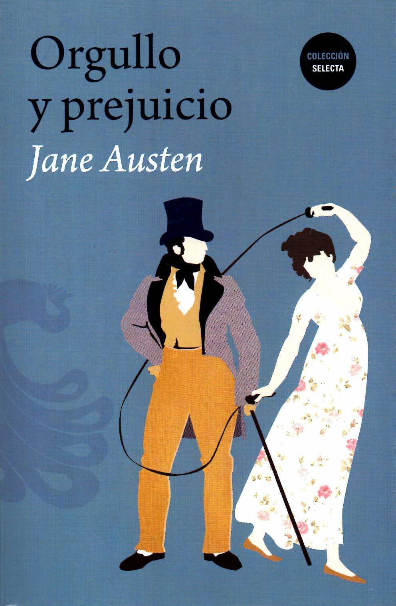
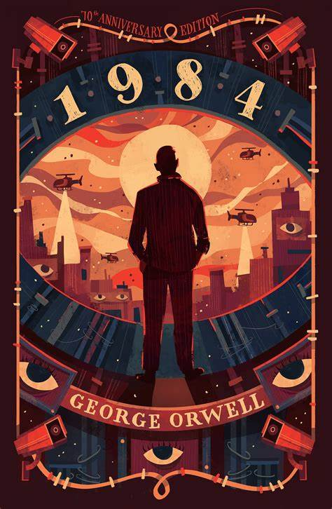

Libros de Literatura disponibles
Don Quijote de la Mancha
Autor: Miguel de Cervantes
Edición: Edición más reciente
Descripción: "Don Quijote de la Mancha" es una obra maestra de la literatura universal y uno de los pilares de la novela moderna. Publicada en dos partes en 1605 y 1615, esta novela narra las aventuras de un caballero que, enloquecido por la lectura de libros de caballería, decide convertirse en un caballero andante. Cervantes combina humor, crítica social y una profunda exploración de la condición humana en esta obra fundamental.
OrdenarCien años de soledad
Autor: Gabriel García Márquez
Edición: Edición más reciente
Descripción: "Cien años de soledad" es una novela emblemática del realismo mágico y una de las obras más influyentes del siglo XX. Publicada en 1967, sigue la historia de la familia Buendía en el pueblo ficticio de Macondo. García Márquez utiliza un estilo narrativo único para explorar temas como la soledad, el destino y la historia de América Latina.
OrdenarOrgullo y prejuicio
Autor: Jane Austen
Edición: Edición más reciente
Descripción: "Orgullo y prejuicio" es una novela clásica de la literatura inglesa publicada en 1813. La historia sigue a Elizabeth Bennet y su relación con el enigmático Mr. Darcy. Austen combina una crítica mordaz de la sociedad de su época con una romántica narrativa, ofreciendo una reflexión sobre el orgullo, los prejuicios y la naturaleza de las relaciones humanas.
Ordenar1984
Autor: George Orwell
Edición: Edición más reciente
Descripción: "1984" es una novela distópica publicada en 1949 que explora un futuro totalitario bajo el régimen opresivo del Partido. La obra de Orwell ofrece una visión inquietante sobre la vigilancia, la manipulación de la verdad y la pérdida de la libertad individual. Su influencia perdura en la discusión sobre la política y la tecnología en la sociedad contemporánea.
OrdenarCrónica de una muerte anunciada
Autor: Gabriel García Márquez
Edición: Edición más reciente
Descripción: "Crónica de una muerte anunciada" es otra obra destacada de García Márquez, publicada en 1981. La novela narra los eventos que conducen al asesinato de Santiago Nasar en un pequeño pueblo colombiano, explorando la fatalidad y la inevitabilidad a través de una narrativa que combina elementos de periodismo y ficción. Es un ejemplo destacado del estilo narrativo de García Márquez y su habilidad para capturar la esencia de la cultura latinoamericana.
OrdenarRepositorio de Libros
Hecha un vistazo a nuestro catalago de libros que tenemos disponibles en nuestro repositorio online.